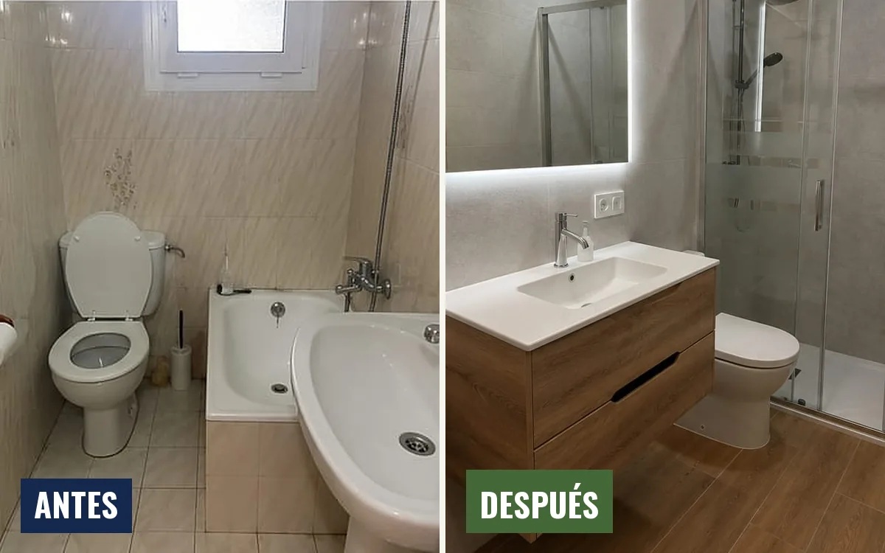
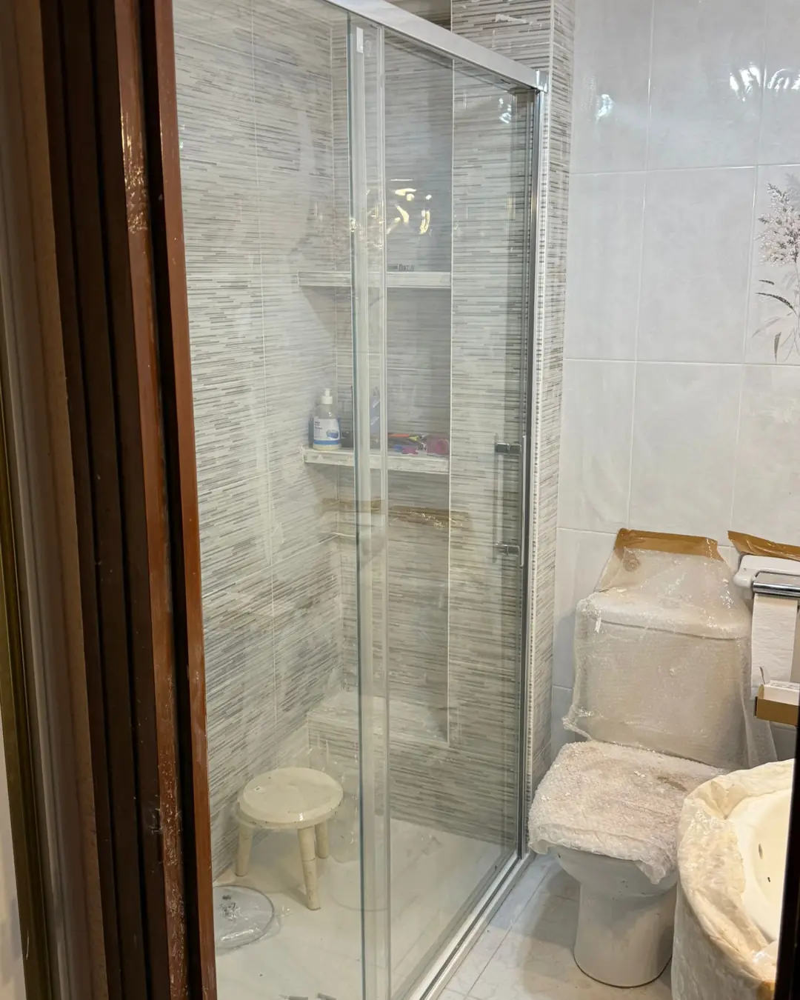
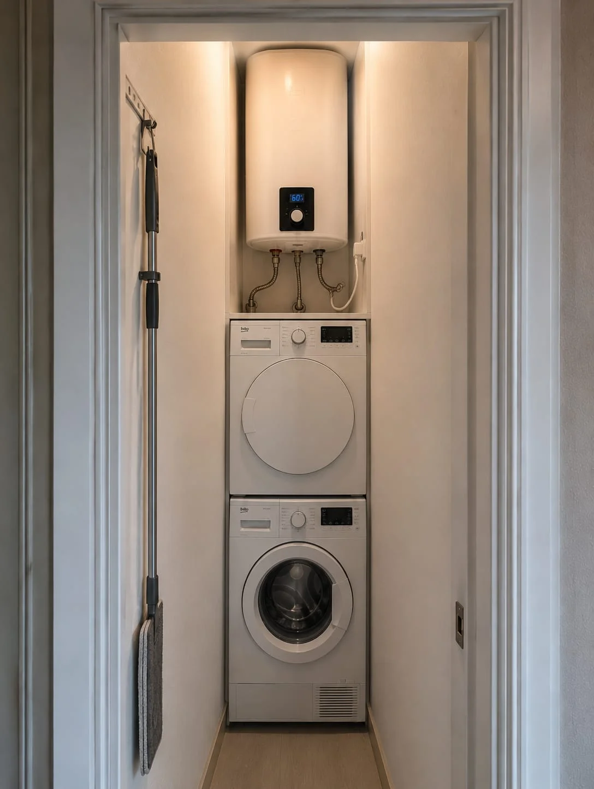
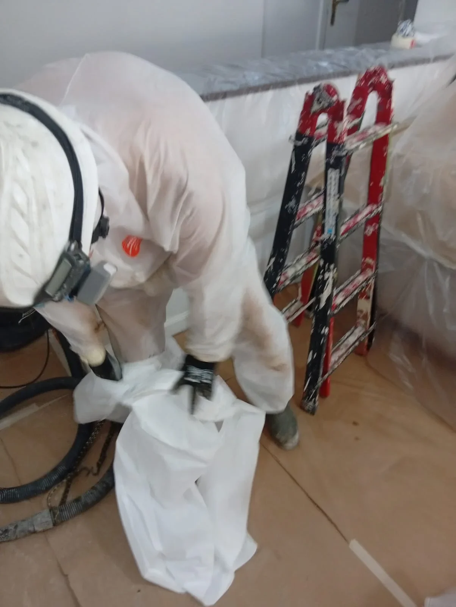
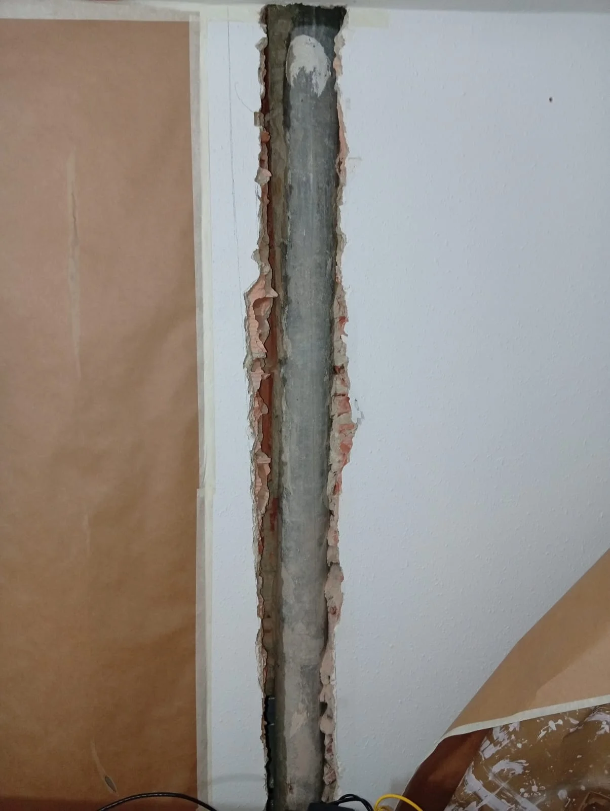
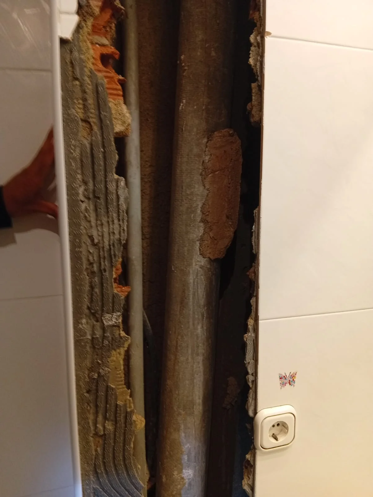
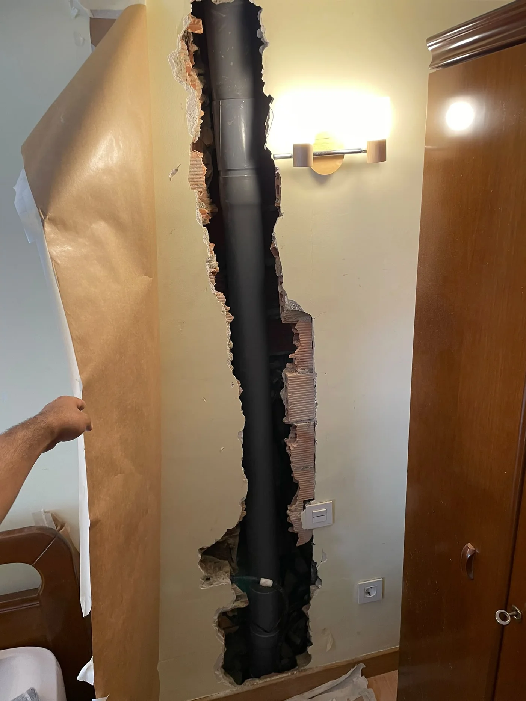
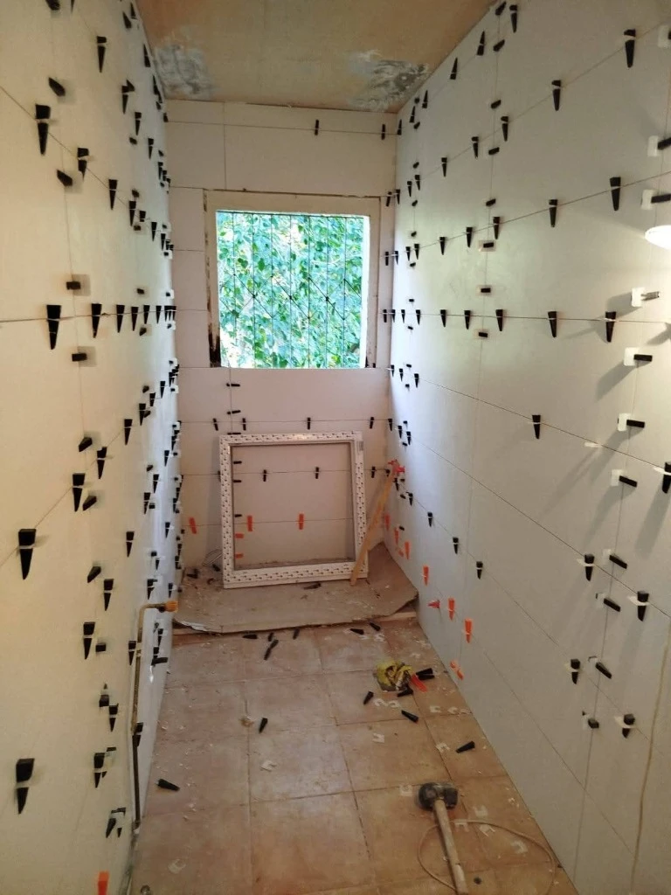

Especialistas en Reformas de Baños en Ermua y comarca
Centramos más de 20 años de experiencia técnica en lo que realmente dominamos en Ermua, Eibar y comarca: reformas completas de baños, cambio de bañera por plato de ducha con saneamiento preventivo de instalaciones, retirada de las bajantes de uralita que aparecen al abrir y reparaciones del baño.
Reforma y Renovación de Baños a Medida
Transformamos tu cuarto de baño para adaptarlo a las necesidades de tu día a día. Ya sea una renovación estética para ganar modernidad y luz, o una remodelación integral redistribuyendo sanitarios y tomas, cuidamos cada fase de la obra con atención al detalle.
Nos adaptamos a las características de tu vivienda, asesorándote sobre materiales duraderos, cerámicas de fácil mantenimiento y soluciones que maximizan el espacio disponible.
- Alicatados y solados porcelánicos con nivelación milimétrica
- Mobiliario técnico a medida: armarios integrados para termo eléctrico, lavadora y secadora
- Instalación de muebles suspendidos, espejos retroiluminados y hornacinas LED
- Sustitución de sanitarios por modelos compactos o suspendidos
- Renovación completa de tuberías de cobre/multicapa y desagües de PVC
- Colocación de mamparas de vidrio templado antical
- Estudio personalizado de cada caso sin compromiso

Cambio de Bañera por Ducha con Saneamiento Accesible
Mucho más que sustituir una bañera por un plato: en E3 Reformas nos aseguramos de que no queden problemas ocultos tras los nuevos revestimientos. Al retirar la bañera, aprovechamos la accesibilidad para sanear y revisar a fondo las tomas de agua y las tuberías de desagüe.
Instalamos láminas de impermeabilización técnica certificada y colocamos platos de ducha de resina con carga mineral antideslizantes Grado 3 a ras de suelo. Dejamos todo revisado, seguro y con remates impecables.
- Inspección y saneamiento preventivo de las instalaciones de fontanería
- Readecuación de caídas y conexiones de desagüe para evitar atascos y olores
- Impermeabilización técnica estanca en zona de aguas y encuentro con paredes
- Platos de resina mineral extraplanos con tratamiento antideslizante C3
- Alicatado coordinado con la estética de tu baño actual
- Sin precios fijos genéricos: valoramos tu baño in situ con presupuesto exacto

Reparaciones y Mantenimiento del Baño
Un servicio ágil para las averías y arreglos puntuales de tu baño. Contar con un profesional de más de 20 años de experiencia garantiza que cada arreglo quede seguro y bien ejecutado a la primera.
Desde sustitución de griferías con pérdidas de agua hasta sellados estancos de mamparas o pequeñas actuaciones de albañilería puntual, atendemos a nuestros vecinos de Ermua, Eibar y alrededores con total cercanía.
- Sustitución y ajuste de griferías, monomandos y columnas de ducha
- Reparación o cambio de mecanismos de cisterna y termos eléctricos
- Sellados de silicona técnica antimoho en platos, bañeras y lavabos
- Ajustes de fontanería puntual y resolución de pequeñas filtraciones
- Azulejos sueltos y juntas deterioradas en el baño
- Atención directa por parte de Hakim sin intermediarios

Retirada y gestión de fibrocemento (uralita)
Nos encargamos de coordinar todo el proceso de principio a fin cuando una reforma requiere retirar elementos de fibrocemento con amianto.
Gestionamos la actuación completa: preparación y picado previo cuando sea necesario, coordinación con empresa autorizada para la retirada de amianto, desmontaje y retirada del material, gestión de residuos conforme a normativa y posterior reparación, cerrado o reconstrucción de la zona afectada.
Un único servicio para solucionar todo el trabajo, desde la apertura inicial hasta dejar la zona nuevamente terminada.
¿La uralita ha aparecido al reformar el baño? Mira cómo lo resolvemos en una sola obra: reforma de baño minimalista con retirada de uralita.
- Coordinación completa de la actuación
- Retirada mediante empresa autorizada
- Gestión y transporte del residuo
- Albañilería, reparación y reconstrucción posterior
- Servicio integral de principio a fin

Cómo Gestionamos tu Bajante o Elemento de Fibrocemento
Evita coordinar 3 gremios distintos. Nosotros unificamos el picado previo, el desamiantado con empresa autorizada y el remate final de albañilería en un solo interlocutor.

Preparación y Picado
Empapelado y protección exhaustiva de la estancia. Picado manual preciso para liberar la mocheta sin tocar ni golpear el conducto de fibrocemento.

Inspección y Coordinación
Evaluación de tramos, uniones y estado general. Coordinamos la fecha exacta con la empresa autorizada (RERA) para minimizar el tiempo de corte.
Retirada y Residuos
Desmontaje estricto bajo normativa con operarios certificados, ensacado hermético y transporte a planta de reciclaje autorizada con certificado oficial.

Reconstrucción y Remate
Instalación de nueva bajante de PVC insonorizado Serie B, cerrado de albañilería, enlucido, alicatado o pintura. Espacio completamente terminado.
Remates alrededor del baño, en la misma obra
Nuestra especialidad son los baños. Si al reformarlo hace falta rematar lo que lo rodea —el suelo del paso al baño, el techo o un tabique—, Hakim lo resuelve en la misma obra para que no tengas que llamar a otro gremio.
- Suelo laminado o vinílico resistente a la humedad en el paso al baño
- Pintura antimoho de techos y paredes del baño
- Tabiques y trasdosados de pladur hidrófugo en el baño

Reformamos Baños en tu Municipio
Con base operativa en Ermua (Calle San Isidro 13), atendemos de manera directa y sin intermediarios a particulares y familias en toda la comarca.
Baños en Ermua
Atención inmediata en el mismo día. Visita técnica y estudio in situ sin compromiso.
Baños en Eibar
Especialistas en la tipología de pisos de Eibar: desagües, ventilación y bajantes saneadas.
Baños en Elgoibar
Cambio de bañera por plato de resina C3 con impermeabilización y fontanería nueva.
Baños en Durango
Reformas completas y sustitución de bañeras sin precios fijos trampa ni intermediarios.